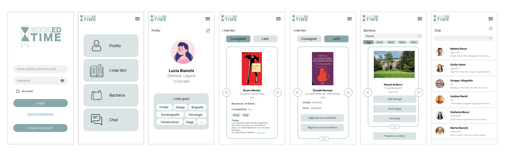

Designing for web
Un progetto di UX/UI design nato nel periodo della quarantena per esplorare le forme della lettura, analizzare i bisogni reali degli utenti e ideare una soluzione digitale ad alto valore sociale.
Un tempo sospeso: il mio approccio metodologico
Ho ideato e sviluppato questo progetto durante il periodo della quarantena COVID-19, un momento di trasformazione in cui la frenesia quotidiana ha lasciato spazio a ritmi differenti. In questo contesto ho scelto di concentrarmi sull'analisi e sulla pratica della lettura.
Lavorando in autonomia e con le biblioteche chiuse, ho impostato una ricerca primaria e secondaria, coinvolgendo soggetti di indagine per mappare abitudini, gusti e preferenze di un target ampio e universale.
Il design si configura come un metodo strutturato di pensiero. Attraverso questo progetto ho applicato competenze di osservazione della realtà per progettare un servizio digitale in grado di rispondere a bisogni concreti.
Dalla carta al digitale: Analisi strategica
Nel percorso di ricerca l'indagine si è focalizzata sull'evoluzione della lettura nell'era tecnologica: le modalità digitali hanno migliorato l'esperienza del lettore o permane un legame con la carta? E perché si assiste a un calo complessivo dei lettori a fronte dell'aumento dei formati digitali?
Per rispondere a questi interrogativi, è stata condotta un'indagine approfondita analizzando l'evoluzione storica del libro e confrontando le tecnologie digitali con la tradizione cartacea.
L'analisi dei dati statistici ISTAT
I dati quantitativi rappresentano il punto di partenza per strutturare le scelte di design. Sono stati analizzati i dati statistici ISTAT a livello nazionale, integrandoli con una ricerca mirata a carattere regionale sulla Liguria per definire il perimetro del problema.
User Research: Indagine sul campo e questionario
Per validare le ipotesi di progetto, è stato somministrato un questionario online a un campione di 100 utenti. L'indagine ha approfondito comportamenti d'acquisto, percezioni e pratiche di lettura, integrando un focus sul book crossing (fenomeno di condivisione spontanea in cui i libri vengono lasciati in luoghi pubblici o apposite stazioni affinché altri lettori possano prenderli, leggerli e rimetterli a loro volta in circolazione).
Sono state esaminate variabili chiave quali l'impatto dell'età e del titolo di studio, la propensione alla conservazione o allo scambio dei libri e le preferenze funzionali tra eBook e carta stampata.
L'analisi dettagliata dei dati raccolti, utile a guidare le scelte di UX design, è illustrata nei grafici sottostanti.


Booked Time: La soluzione di Design
Dall'analisi è emerso che la lettura necessita di stimoli contemporanei. Per colmare questa lacuna, integrando le dinamiche del book crossing, è stato ideato Booked Time.
L'applicazione è progettata per avvicinare le nuove generazioni alla lettura attraverso la condivisione, lo scambio di consigli e l'organizzazione di momenti di incontro comunitari.
La fase di ideazione e produzione grafica del logo e dei mockup è stata interamente realizzata avvalendosi della Suite Adobe e di Figma. Di seguito ne vengono mostrate le immagini.


Analisi strategica e SWOT
Per definire la fattibilità e la visione strategica del concept, sono stati sintetizzati i fattori critici attraverso un'attenta analisi SWOT.
| Categoria / Fattore | Analisi SWOT - Booked Time |
|---|---|
| Strengths |
• L’unione fa la forza: avere una community con cui condividere la propria passione incentiva la costanza e il piacere della lettura. • Algoritmi di suggerimento personalizzati basati sui gusti specifici dell'utente. • Valorizzazione della lettura come esperienza sociale e collettiva, superando la dimensione puramente isolata. |
| Weaknesses |
• Necessità di raggiungere una massa critica iniziale di utenti affinché il servizio esprima appieno il suo potenziale di condivisione. |
| Opportunities |
• Opportunità di abilitare incontri di lettura virtuali globali, superando ogni barriera geografica e temporale. • Integrazione di eventi digitali ed esperienze dirette con gli autori. |
| Threats |
• La percezione culturale radicata che la lettura debba essere un'attività strettamente individuale. • Il rischio di perdita di valore costruttivo nei gruppi in caso di moderazione inadeguata. |
Lo sviluppo del progetto ha permesso di consolidare competenze avanzate nell'ambito dell'UX/UI design e della progettazione responsive, focalizzata sullo sviluppo di interfacce ottimizzate per garantire un'esperienza utente fluida e coerente sia su dispositivi mobile che desktop. L'integrazione strutturata tra ricerca strategica e analisi quantitativa ha consentito di tradurre insight complessi in specifiche tecniche rigorose e scalabili.
Booked Time rappresenta la sintesi metodologica di un percorso rigoroso, evidenziando una capacità progettuale solida nel trasformare i bisogni reali degli utenti in un ecosistema digitale cross-device ad alto valore funzionale e sociale.